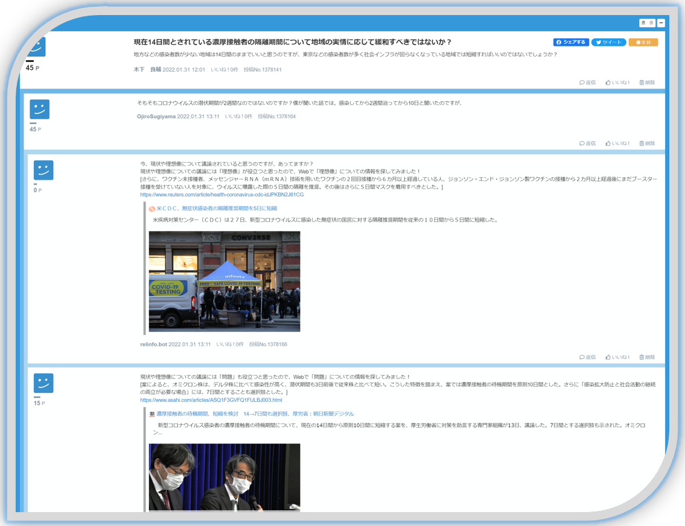
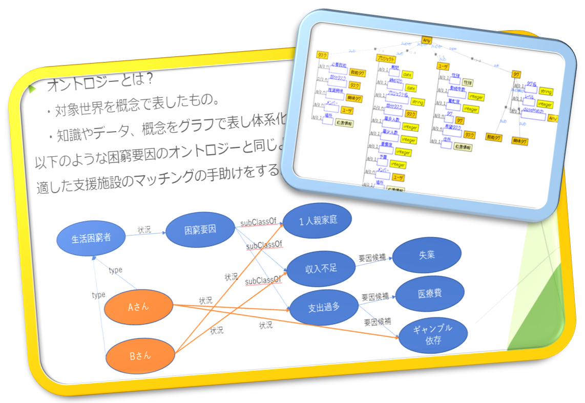
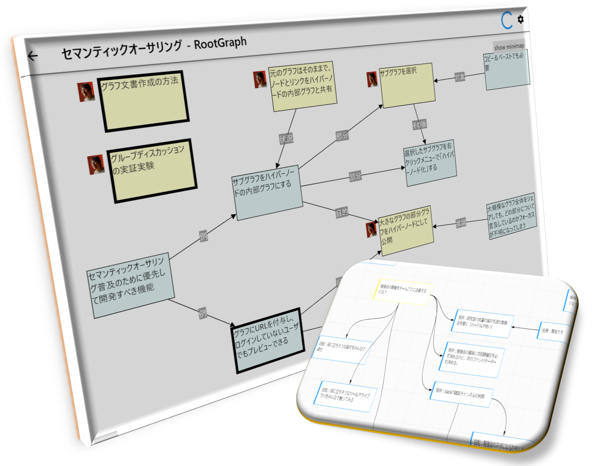
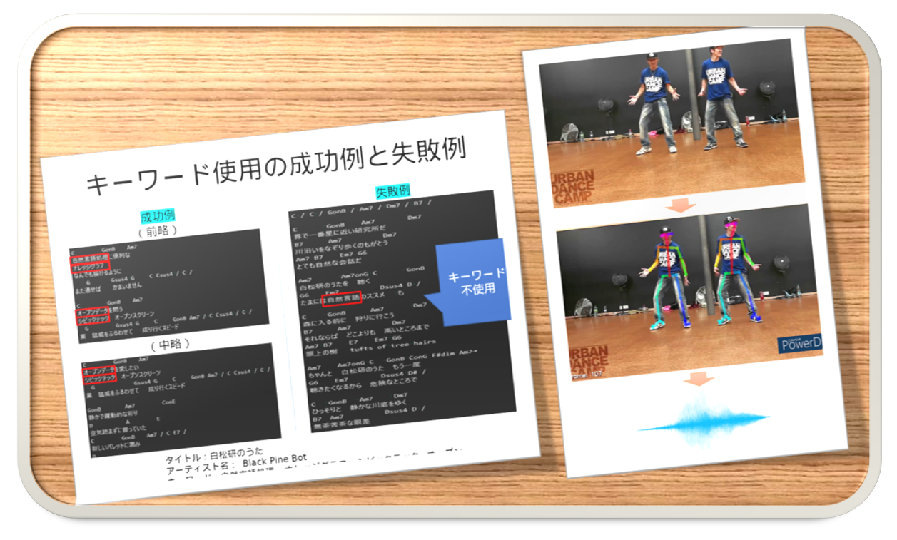

議論支援と関連情報提示
研究内容
Web議論では持っている情報量や議論の理解度などの要因で発言しづらい人が出てきてしまいます。そういった人が発言しやすくなるために、議論支援や関連情報提示を行うことで議論を活性化させ、合意形成をサポートするような研究をしています。具体的には、リアルタイムで行われている議論から発言などのデータを取得してきて、そのデータをもとにChatGPTなどの自然言語処理システムによって推薦する情報を選別して推薦するなどのことを行っています。その他にも、LLMを利用した様々な議論支援システムの開発を行っています。
研究テーマ
- Web議論中にその議論に関連した、今後の議論展開に役立つ情報を推薦することで発言を促し議論を活性化させるシステム
- 対立意見を「止揚」させてWin-Winな合意案を導くための支援システム
- LLMで県庁や行政のファイル検索をして「あのときの経緯」を提示するシステムの開発
- LLM（GPT-3.5）を用いた議論中の誤謬検出
- LLMを用いた議論における論点可視化システムの開発
- 仮想空間における自動ファシリテーションのための発言生成
- LLMによる議論シミュレーションとそれを使った議論参加の練習システム
- やる気、興味、関心を推測するシステム

対話システム
研究内容
近い将来、人間の生活に密着していろいろ支援してくれるパーソナルAIが当たり前になると言われています。例えば、困っているときに相談できる人を教えてくれるとか、やりたいことを考えるのを助けてくれるとか。そういう対話システムを実現したいという研究が、白松研究室にもいくつかあります。
研究テーマ
- A dialogue system for mental health care by using LLM.
- 就活生向け自己分析支援対話システム
- 集団の意思決定への参画を支援するパーソナルBot
- メンタルケアのためのメタ認知支援対話システム
ナレッジグラフ
研究内容
ナレッジグラフとは、Web上にあるさまざまな情報源を体系的に連結し、グラフ構造で表した知識のネットワーク（データベース）のことです。白松研では、ナレッジグラフの中でも、オントロジーの構築やLinked Open Data（LOD）を利用した研究を行っています。
研究テーマ
- Entity Linker: 文章の中で言及された固有表現を、知識ベース（Wikidata）内のエンティティに紐付ける
- テキスト内における因果関係抽出の手法の開発（主に原因の抽出）
- 生活困窮者支援のための要因オントロジーの構築

セマンティックオーサリング
研究内容
人々が議論するとき、内容を後から見返せるように議事録やメモをとって行われることがあります。しかし、議論が長くなってくると、意見の根拠やプロセスが見えにくくなり、どうしてその意思決定がなされたのかがわからなくなってしまう問題があります。そこで、Web議論システムを活用することにより、議論の内容を構造化することで、どういう意図や根拠でその意見が出たのかを見えるようにするとができます。セマンティックオーサリングでは、議論をグラフ構造にすることで、意見同士の繋がりが分かりやすくなっています。
研究テーマ
- LLMを用いたアイデア記録のための発話音声の半自動的要約
- グラフ文書の構造におけるメタ認知の測定
- 行政の過去の文書から「あのときの経緯」を可視化するシステム

音楽情報処理
研究内容
白松研は人々のコラボレーションを支援する技術を研究していますが、自然言語を使ったコラボレーションだけでなく、身体動作を使った即興合奏のようなコラボレーションも研究対象にしています。手の動きでメロディの上下動を指定できる即興合奏支援システムや、ダンスの動きから楽曲生成するシステムを作っています。さらに、2022年からは大規模言語モデルを使った楽曲生成する研究、2023年からはダンス音楽からダンサーの位置構成を生成する研究にもチャレンジしています。
研究テーマ
- LLMを使ったご当地ソング等の歌詞とコード譜の自動生成
- ダンス映像からリアルタイムに変化するリズム推定および楽曲生成
- 楽曲からダンスの振り付けを支援するためのダンサー位置構成の生成
